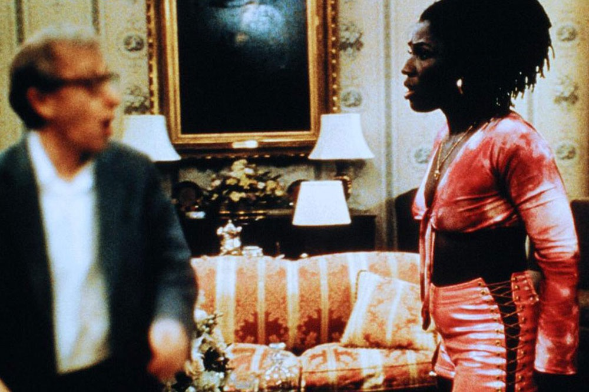

Deconstructing Harry
In one of Woody Allen’s films the main character is out of focus. It’s not a technical problem but some sort of disease that has befallen him: his image is consistently blurred.
His lack of definition turns into a material problem. Focus is identified as a class position, a position of ease and privilege, while being out of focus lowers one’s value as an image.
The contemporary hierarchy of images, however, is not only based on sharpness, but also and primarily on resolution.
Rewind Here.
Fast Forward Here.